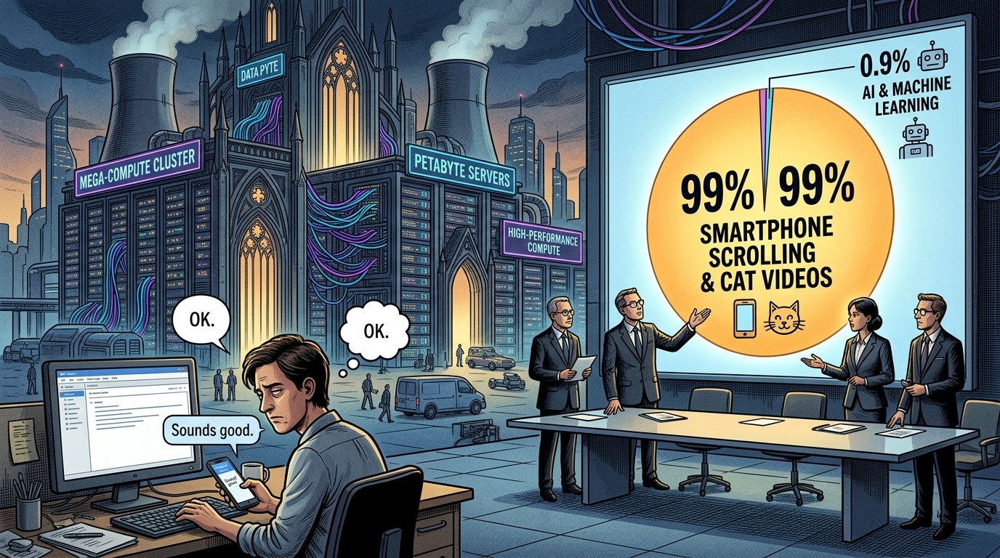

Feeding the AI PR Machine: Unfiltered Mobile Telemetry, Codebase Audits, and the Real Economy
By Charles W. Kinslow IV, J.D., C.P.A. • Published September 2026 • Verified Telemetry Audit

1. The Setup: How the Narrative Left the Ground
If you read corporate earnings transcripts, technology columns, or management consulting whitepapers, you would think every human being on the planet spends half their waking day conversing with artificial intelligence. Hyperscalers are pouring hundreds of billions of dollars into specialized silicon and utility-scale power grids. Advisory firms are billing Fortune 500 boards eight figures to draft "enterprise transformation roadmaps." And corporate PR shops are working around the clock to announce yet another pilot project that is supposedly reshaping global commerce.
Then you pull the raw telemetry.
When you bypass the marketing brochures and inspect the cold, unvarnished system logs—actual smartphone operating system screen time, production Git commits across enterprise codebases, and direct U.S. Census Bureau surveys of commercial operators—the story collapses. Consumers are not living inside AI assistants. In reality, they barely touch them. And in business environments, the technology has produced minimal measurable operating margin expansion, while increasing worker workload and code maintenance debt.
2. The Smartphone Screen Time Reality: The 0.9% Rule
The most objective metric of modern human attention is smartphone screen time. The average smartphone owner spends between 3.5 and 4.5 hours per day staring at a mobile display. If artificial intelligence were rewiring everyday human habits, it would show up directly in device operating system logs.
According to comprehensive mobile market telemetry tracked by Sensor Tower's Mobile Market Intelligence Reports, here is where global human attention actually went:
- Total Global Mobile Screen Time: Consumers logged 5.3 trillion hours across all mobile apps globally (averaging ~3.6 hours per day per user).
- All Generative AI Apps Combined: Total screen time across every standalone generative AI application (ChatGPT, Claude, Gemini, Copilot, Perplexity, Character.ai, and regional alternatives) totaled 48 billion hours.
- The Net Attention Share: 48 billion divided by 5.3 trillion equals 0.90%. In plain English: for every 100 minutes an average human spends on a smartphone, less than one single minute is spent inside an AI application.
- Where the Other 99 Minutes Went: Social media, messaging, and streaming video (TikTok, YouTube, Instagram, WhatsApp) captured nearly 2.5 trillion hours—roughly 47% of total human mobile engagement.
PR releases routinely announce hundreds of millions of downloads to create the illusion of an indispensable daily habit. Downloading an app once and never opening it again is not adoption. People are not using their pocket supercomputers to usher in a new cognitive era; they are texting friends and watching short-form video clips.
3. Across All Models: The Utility vs. Fantasy Roleplay Divide
When you look across the entire model spectrum—rather than just OpenAI's flagship—an instructive pattern appears. AI applications split cleanly into two buckets: quick 5-minute transactional utilities, and one single entertainment roleplay anomaly.
| Model / Platform | Core Use Case | Avg Session | Daily Time | Behavior Profile |
|---|---|---|---|---|
| ChatGPT (OpenAI) | Drafting, research, search | 6 – 7 min | ~15 min | Quick utility. Used like a spell checker. Grab text and exit. |
| Claude (Anthropic) | Coding, long doc analysis | 5 – 8 min | ~15 – 20 min | Developer/technical focus. High token count, brief task bursts. |
| Gemini (Google) | OS overlay, voice prompts | 2 – 5 min | < 10 min | Pushed via Android system integration. Quick voice lookups. |
| Copilot (Microsoft) | Office ribbon, OS integration | 2 – 4 min | Sporadic | Forced UI placement in Edge/Windows. High accidental clicks. |
| Perplexity (Perplexity AI) | Citation-backed search | 3 – 5 min | ~10 min | Direct Google alternative. Query run, source checked, tab closed. |
| Character.ai (Entertainment) | Fictional avatar roleplay | 17 – 45 min | 90 – 120 min | The sole industry outlier. Interactive fiction for teens and gamers. |
Independent verification from Pew Research Center's National Surveys confirms this shallow pattern among the general public:
- While 44% of American adults say they have "ever used" ChatGPT, only 24% use any AI chatbot daily (and only 4% report using it continuously).
- Over half of all Americans (51%) do not use AI chatbots at all.
- Web traffic logs from Similarweb Telemetry show the average ChatGPT visit duration sits at 6 minutes and 38 seconds, with roughly 2 to 4 queries per visit.
The Character.ai anomaly proves the rule: the only reason an AI model achieves social-media-scale engagement is when it stops trying to be a corporate productivity tool and becomes an interactive fantasy simulator for teenagers. Once you look at the serious frontier models intended for enterprise work, engagement shrinks to 6-minute bursts.
4. The Real Economy Audit: Hard Data vs. Vendor Surveys
To evaluate whether AI has genuinely advanced business operations across different industry sectors, you must discard vendor-sponsored surveys. Software companies routinely pay market research firms to publish studies where 90% of surveyed executives declare AI is their "top strategic priority." An executive expressing a wish on a multiple-choice survey is not business adoption. Here is what independent, audited measurements reveal:
1. Direct Government Survey: U.S. Census Bureau (BTOS)
The Census Bureau collects data every two weeks from tens of thousands of operating American businesses. When businesses were asked whether they use AI in the direct production of goods or services, adoption rose from 4.6% in early 2024 to approximately 10% in late 2025. Even when the Census Bureau broadened the question to include any incidental task (e.g., someone drafting an email or generating a graphic), adoption stalled between 17% and 20%. Between 80% and 90% of the active American commercial economy does not use AI in its core operations.
2. The Workplace Productivity Paradox: Upwork Research Institute
While 96% of C-suite executives claimed generative AI would increase overall company productivity, 77% of employees using the tools reported that AI actually decreased their productivity and added to their total workload. Workers reported that the time saved generating first drafts was swallowed whole by fact-checking machine hallucinations, rewriting robotic syntax, and managing increased output demands from managers.
3. Enterprise Codebase Telemetry: GitClear (150M+ Lines)
Rather than surveying opinions, GitClear analyzed over 150 million lines of code committed to production enterprise Git repositories. The findings were devastating:
- Code churn (code pushed and subsequently modified or deleted within two weeks) effectively doubled from 3.1% in 2020 to over 7% in 2025.
- Commits containing duplicate copy-pasted blocks increased roughly 10-fold.
- The telemetry shows that AI coding assistants function like an itinerant contributor: generating large volumes of repetitive, unmaintainable code that senior engineers must spend subsequent weeks refactoring and debugging.
4. Macroeconomic Reality: Goldman Sachs & MIT (Daron Acemoglu)
In Goldman Sachs' landmark report ("Gen AI: Too Much Spend, Too Little Benefit?"), Head of Global Equity Research Jim Covello pointed out that an estimated $1 trillion in hardware and infrastructure capex cannot be economically justified by automating simple tasks. In the same report, MIT economist Daron Acemoglu calculated that fewer than 5% of all workplace tasks can be cost-effectively impacted by AI over the next ten years, projecting an imperceptible cumulative U.S. GDP boost of ~0.5% over an entire decade (~0.05% per year).
5. Anatomy of the PR Loop: How the Machine Feeds Itself
Why does the public conversation remain obsessed with artificial intelligence when the empirical telemetry shows minimal real-world impact? Because an entire self-serving industry relies on keeping the hype alive:
- The Capital Expenditure Pressure: Cloud hyperscalers have committed tens of billions in capex to build data centers. They must justify these balance sheet investments to Wall Street analysts every quarter.
- The Subsidized Sentiment Surveys: Vendors sponsor market research studies that ask ambiguous questions. When 90% of executives check "yes," the vendor issues a press release proclaiming that "90% of enterprises are adopting AI."
- The Consulting Advisory Grift: Management consulting firms take these headlines to corporate boards and pitch multi-million-dollar "AI readiness audits" and "digital roadmaps," warning directors that competitors are moving ahead.
- The Shelfware Purchase: Enterprise IT buys thousands of licenses to check the corporate box. Within 60 days, active employee usage collapses into digital shelfware.
- The Media Echo Chamber: Tech publications write breathless profiles about corporate pilots, citing the vendor's press release as independent validation, restarting the cycle.
6. The Verdict
The hard numbers do not lie: out of 5.3 trillion hours of mobile screen time, all generative AI models combined capture less than one single percent. In the commercial sector, 80% to 90% of businesses do not use AI in their core operations. In software engineering, code churn has doubled and code duplication has expanded 10-fold. And 77% of workers saddled with these tools report that it made their jobs harder, not easier.
Outside of teenagers roleplaying with fictional avatar bots and workers generating quick first drafts of emails, the AI PR machine has accomplished almost nothing of economic consequence. It has produced noise, invoices for consultants, and massive energy consumption. Everything else is marketing.
Primary Data Sources & Verification Links
- Sensor Tower Mobile App Telemetry: Global mobile screen time (5.3T hours) and generative AI share (48B hours / 0.90%). [Direct Link]
- Similarweb Web Traffic & Engagement: Average visit duration (~6m 38s), bounce rates, and pages per visit for ChatGPT. [Direct Link]
- Pew Research Center Surveys: National polling on adult adoption: 44% tried, only 24% daily users, 51% non-users. [Direct Link]
- U.S. Census Bureau BTOS: Bi-weekly business surveys: 10% production use, 17-20% any business use. [Direct Link]
- Upwork Research Institute: Workplace study: 96% C-suite expectation vs 77% worker productivity loss. [Direct Link]
- GitClear AST Code Analysis: 150M+ lines analyzed: 2x code churn increase, 10x copy-paste code bloat. [Direct Link]
- Goldman Sachs Investment Research: "Gen AI: Too Much Spend, Too Little Benefit?" by Jim Covello. [Direct Link]
- MIT / NBER Macroeconomic Study: Daron Acemoglu: "The Simple Macroeconomics of AI" (~0.5% GDP boost over 10 years). [Direct Link]